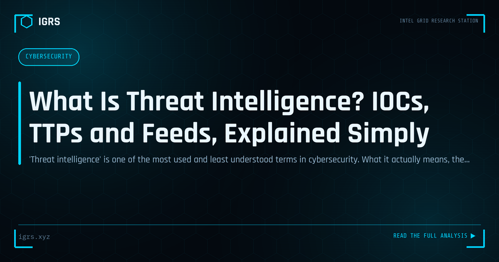

What Is Threat Intelligence? IOCs, TTPs and Feeds, Explained Simply
| File No. | OD-010/2026 |
| Subject | Cyber threat intelligence concepts: levels, indicators, frameworks, lifecycle |
| Category | Threat Intelligence |
| Author | Manuj Kumar Pandey |
| Published | 2026-06-05 |
| Reading time | 12 minutes |
'Threat intelligence' is one of the most used and least understood terms in cybersecurity. What it actually means, the difference between an IOC and a TTP, and why context is everything.
Threat Intelligence: Turning Data into Defence
Threat intelligence is evidence-based knowledge about cyber threats — the actors, their methods, their infrastructure, and their motivations — used to inform defensive decisions. In an era of sophisticated, persistent adversaries, threat intelligence transforms security from reactive firefighting into proactive defence. This guide explains what threat intelligence is, its types, and how organisations use it effectively.
What Threat Intelligence Actually Is
Threat intelligence is not raw data — it is processed, analysed, and contextualised knowledge that supports decisions. A list of malicious IPs is data; understanding which threat actor uses those IPs, against which targets, and why, is intelligence. The distinction matters because intelligence drives action, while raw data alone often just adds noise.
The Four Levels of Threat Intelligence
| Level | Audience | Content |
|---|---|---|
| Strategic | Leadership | High-level trends, risk, threat landscape |
| Tactical | Defenders | Attacker TTPs and techniques |
| Operational | SOC/IR teams | Specific campaign details |
| Technical | Security tools | Indicators: IPs, hashes, domains |
The Intelligence Lifecycle
Threat intelligence is produced through a structured lifecycle: direction (defining requirements), collection (gathering data from sources), processing (organising the data), analysis (deriving insight), dissemination (delivering to consumers), and feedback (refining the process). This cycle ensures intelligence is relevant, timely, and actionable rather than an undirected accumulation of data.
Sources of Threat Intelligence
Intelligence is gathered from diverse sources:
- Open source (OSINT) — public reports, research, news
- Commercial feeds — vendor threat intelligence services
- Information sharing communities — sector ISACs, CERT-In advisories
- Internal telemetry — the organisation's own incident data
- Dark web monitoring — threat actor forums and marketplaces
Indicators of Compromise
Technical threat intelligence centres on Indicators of Compromise (IOCs) — observable artifacts that signal malicious activity. These include malicious IP addresses, domain names, file hashes, URLs, and email addresses. IOCs feed directly into security tools for automated blocking and detection. However, IOCs are often short-lived as attackers change infrastructure, which is why TTP-based intelligence is increasingly valued for its durability.
From IOCs to TTPs
While IOCs are easily changed by attackers, their tactics, techniques, and procedures (TTPs) are more stable. An attacker can switch IP addresses instantly but is less likely to change their fundamental methods. The MITRE ATT&CK framework catalogues TTPs, enabling defenders to detect attacker behaviour even when specific indicators change. This shift from IOC-focused to TTP-focused intelligence reflects the maturing of the discipline.
How Organisations Use Threat Intelligence
Threat intelligence drives multiple security functions:
- Prioritising patching based on actively exploited vulnerabilities
- Enriching SOC alerts with context for faster triage
- Blocking known-malicious indicators automatically
- Informing threat hunting hypotheses
- Supporting incident response with attacker context
- Guiding strategic security investment
CERT-In and India-Specific Intelligence
For Indian organisations, CERT-In is a key intelligence source, issuing advisories on vulnerabilities and threats relevant to India. Sector-specific bodies and the broader Sanchar Saathi ecosystem add context. India-focused threat intelligence — understanding the threat actors, campaigns, and fraud typologies specifically targeting Indian organisations and citizens — is more actionable than generic global intelligence for defending Indian assets.
Operationalising Threat Intelligence
Intelligence only delivers value when operationalised. This means integrating feeds into security tools for automated action, establishing processes to act on advisories, training analysts to use intelligence in their workflows, and measuring whether intelligence actually improved outcomes. Many organisations collect intelligence but fail to operationalise it, leaving its potential value unrealised.
Building a Threat Intelligence Capability
Developing threat intelligence capability involves defining clear intelligence requirements based on the organisation's risks, selecting relevant sources, establishing processes to analyse and disseminate intelligence, integrating it into security operations, and continuously refining based on feedback. For Indian organisations, combining global feeds with CERT-In advisories and India-specific context produces intelligence that genuinely strengthens defence. As threats grow more sophisticated, the organisations that effectively harness threat intelligence gain a decisive advantage in anticipating and countering attacks before they cause harm.